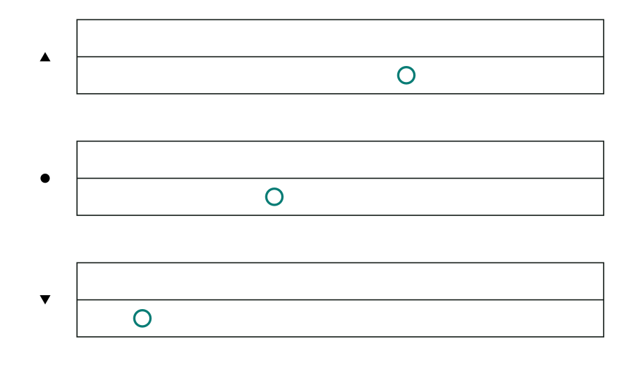

Use the same map again
The twelve-pitch pattern repeats for higher and lower sounds.
Rule: Each octave has its own three-line band. A dot marks the A4–G♯5 band. One up triangle marks the band above it; one down triangle marks the band below it. More triangles mean farther bands.

C6 · higherC5 · dot bandC4 · lowerAn octave is the distance from a note to the next note with the same letter, such as C4 to C5. It takes twelve semitone steps to get there. The higher note sounds higher, but the pattern of note names begins again.
Read the marks
The dot and triangles mark whole bands, not single notes. Find the mark beside a band, then use the same pitch map you learned before. C has the same place in every band.
A melody can move between bands at any note. For many piano pieces, four bands at a time are enough to show the notes played by two hands. As the music moves higher or lower, the chosen set of bands can change before a bar. The marks appear again at that change.
At least one band stays drawn through each stretch as a reference. Other bands appear where notes sound, but their empty bars can be hidden. This keeps the page smaller.
The bands you can see are not always consecutive octaves. For example, a dot band and a band with two up triangles may sit next to each other on the page, with an octave missing between them. Read the marks; do not count only the visible bands.
Think about it: You see a C in the dot band. Later you see a C in a band marked with one up triangle. Both Cs have the same place inside their bands. Are they the same sound?
Show the answer
No. The first is C5 and the second is C6. The triangle tells you to read the second C one octave higher, even though its place inside the band is the same.